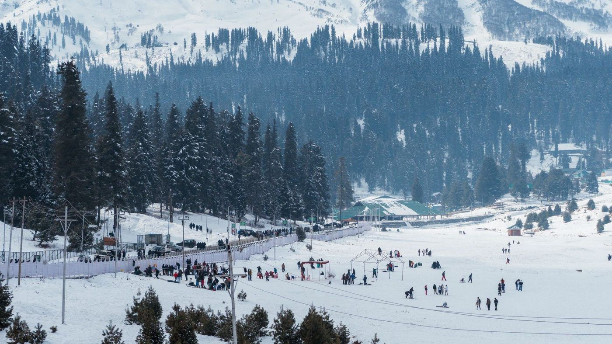
Gulmarg
A meadow at 2,650 m that turns into one of Asia's great ski slopes for four months, and a gondola ride above the treeline for the other eight.
Gondola · Skiing · Meadow walks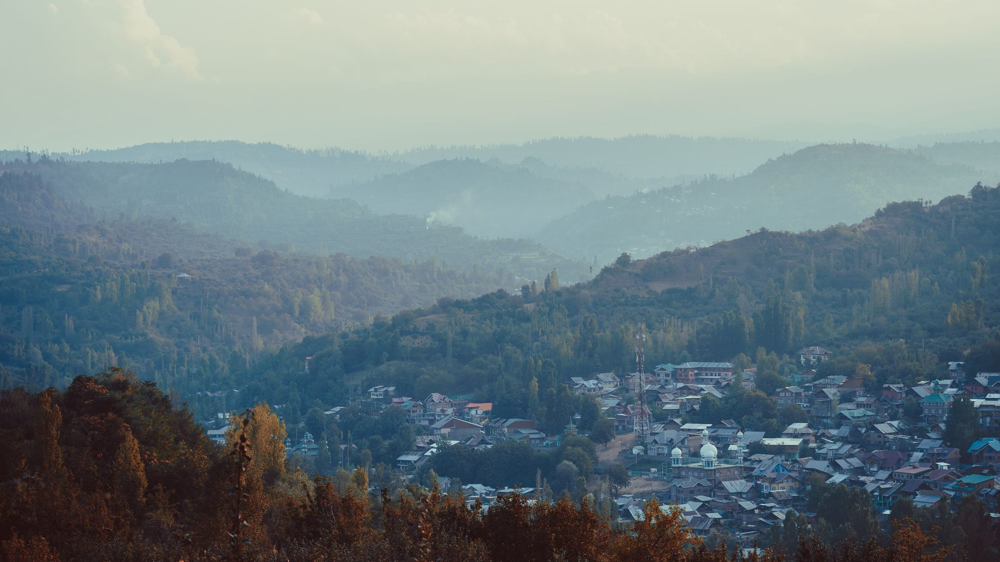
Every valley here has a different week when it's at its best, and a different road to reach it. Ubaid plans your days around that — the lake, the meadows, the passes, the tea stop nobody puts on a brochure. One conversation, and it's arranged.
Gulmarg and Pahalgam look like an easy same-day pair until you're on the road at four in the afternoon watching the light go. Half of planning a trip here is knowing what not to attempt in a day.
That's the part Ubaid does for you. Tell him how many days you have, who's coming, and what you actually enjoy — walking, sitting still, photographing, eating — and he'll shape the route around it. Nothing is pre-priced because no two trips here should cost the same.
See how a trip comes togetherThe Valley
Some you'll have heard of. The last few are why people come back.

A meadow at 2,650 m that turns into one of Asia's great ski slopes for four months, and a gondola ride above the treeline for the other eight.
Gondola · Skiing · Meadow walks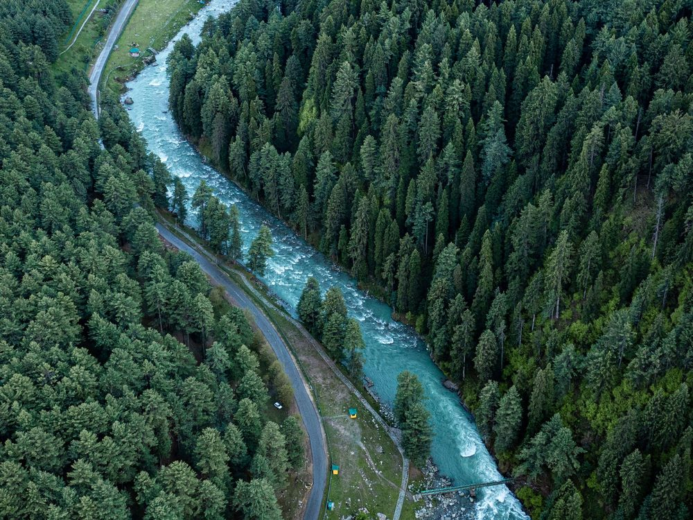
Where the Lidder comes down loud and cold through the pines. The base for Aru, Betaab and every good river-side afternoon.
River · Pine forest · Riding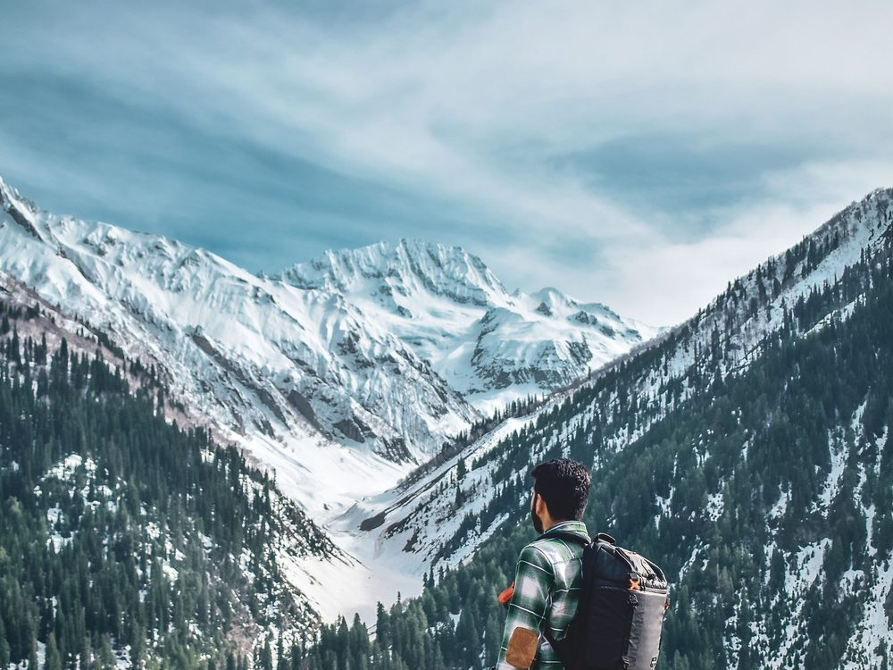
The meadow of gold, and the last stop before the Zoji La. Thajiwas glacier sits close enough to reach and back before dark.
Glacier · Alpine · Day trek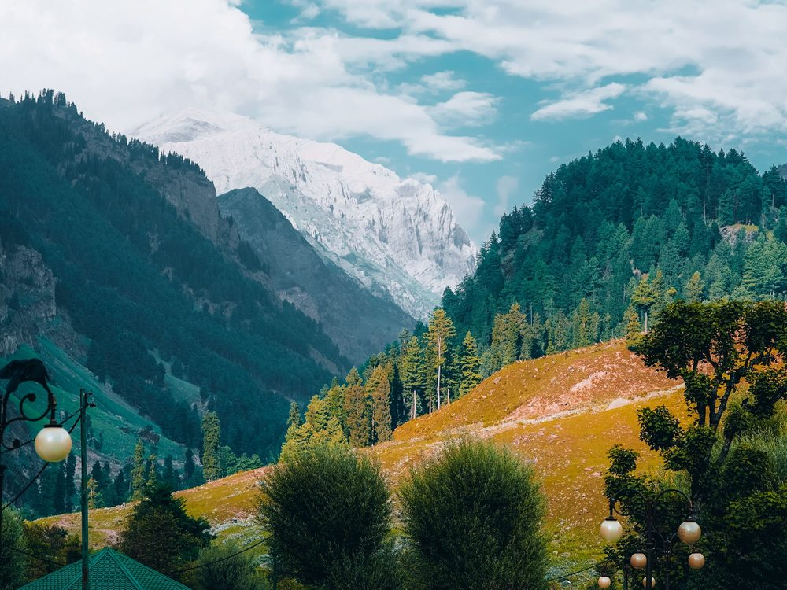
Fifteen kilometres past Pahalgam, closed in on both sides by rock and deodar. Short on effort, heavy on view.
Easy access · Photography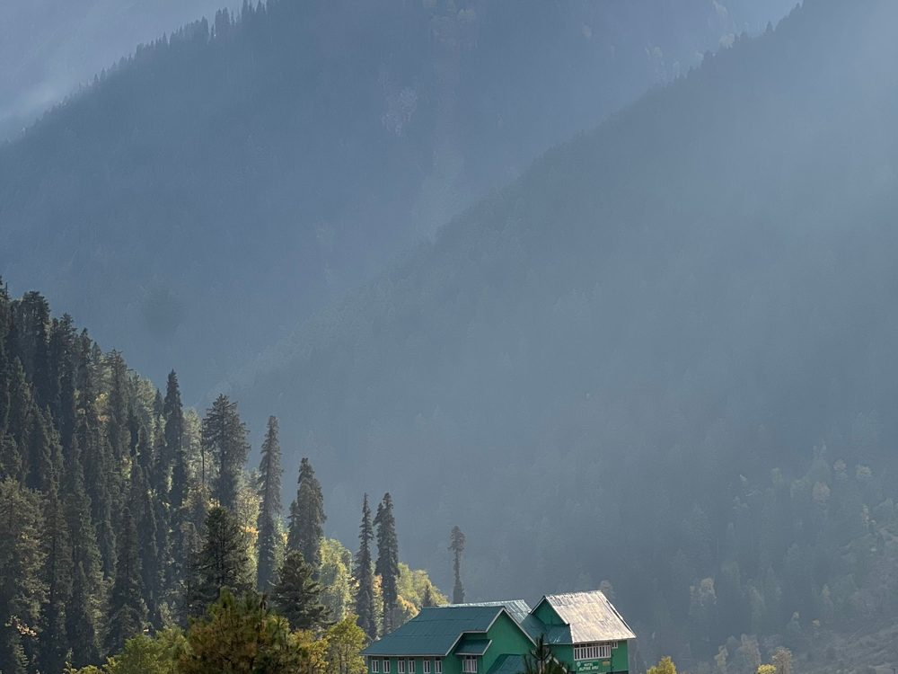
A shepherd village where the road simply ends and the trekking routes to Lidderwat and Tarsar begin.
Trek base · Villages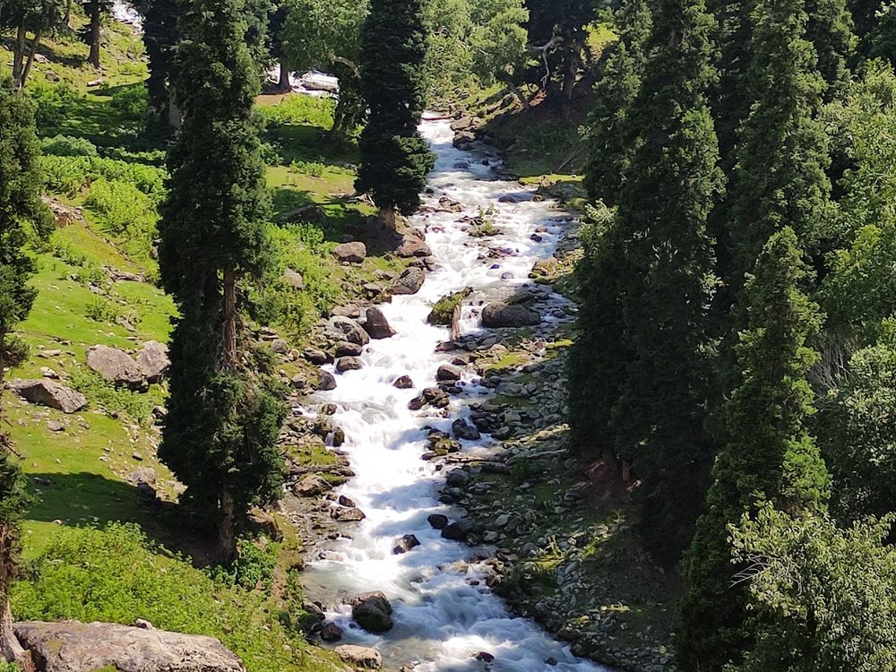
"The valley of milk" — grass, a shallow white-water stream, and almost nobody. Close enough to Srinagar for a day.
Quiet · Day trip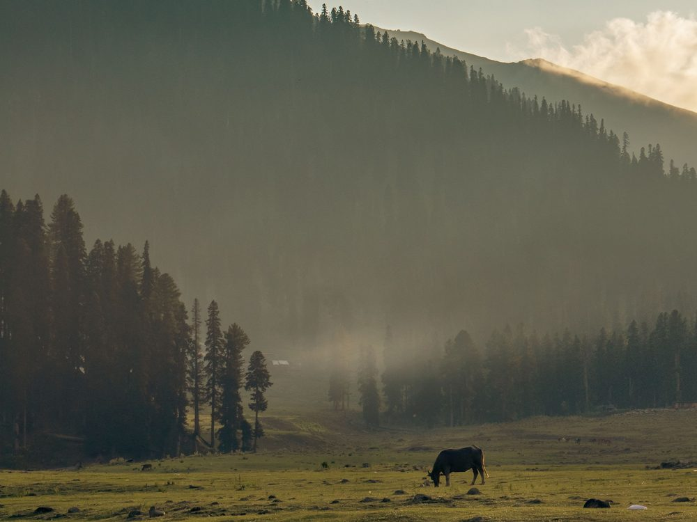
Open meadow ringed by fir, with a walk down to the Doodh Ganga. The valley's best-kept picnic.
Meadow · HorsesMughal gardens, the old city's woodwork and copper bazaars, and Dal Lake at either end of the day.
Gardens · Old city · Crafts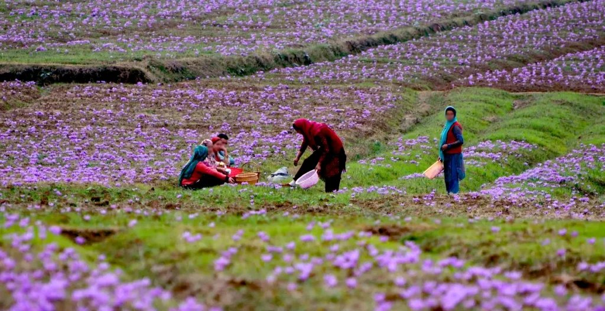
The saffron fields, purple for about three weeks from late October — the most expensive spice on earth being picked by hand, half an hour from Srinagar.
Saffron · Late autumn onlyAlso arranged on request: Gurez, Bangus, Tulail, Verinag, Kokernag, Aharbal and the Tulip Garden in its two-week window. Ask on the call.
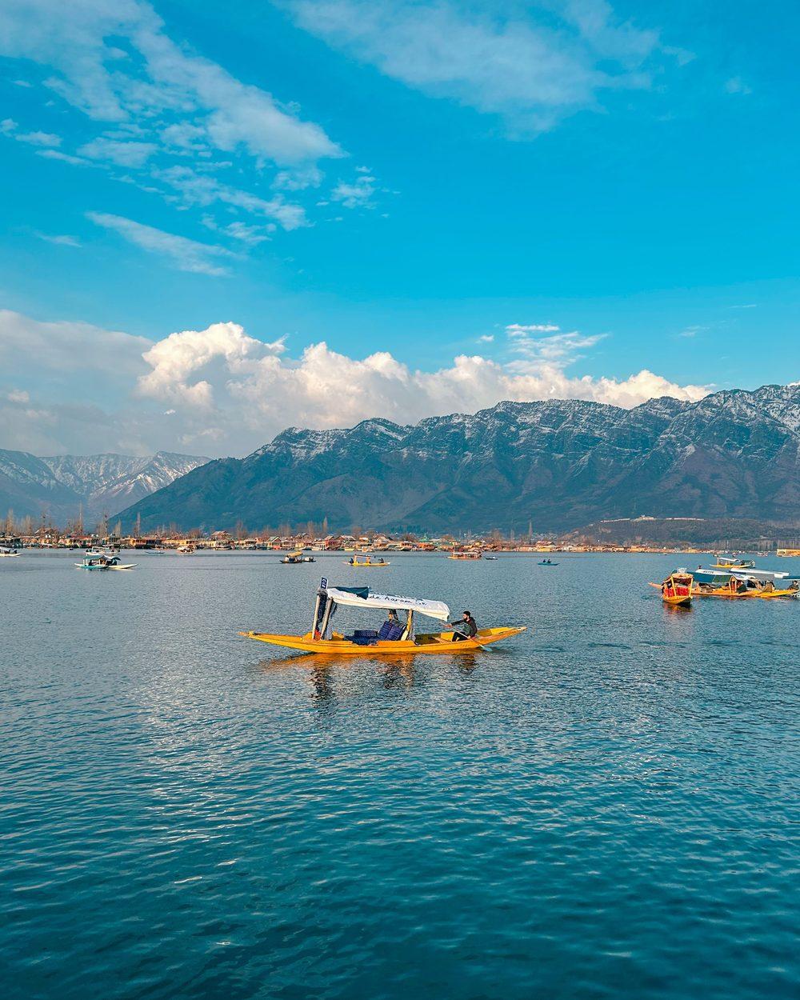
Houseboats & shikara
The houseboats on Dal and Nigeen are cedar, carved by hand, and no two are alike — which is exactly why booking one off a photo is a gamble. Ubaid knows which ones are still properly kept, which end of the lake stays quiet, and which owners will feed you like family.
Getting around
No shared coaches, no eight-stop circuit with strangers. The vehicle is yours for the day and the route can change at breakfast.
Met at Srinagar arrivals and driven straight to the boat or hotel, however late the flight runs. Jammu–Srinagar runs and same-day return trips too.
Hatchback, sedan, SUV or a Tempo Traveller for a bigger group — with a driver who's driven these roads in snow and knows where to stop.
Four days or fourteen, honeymoon or three generations travelling together — the plan is drawn after he's heard what you want.
Gurez, Tulail and the routes that need paperwork or a 4×4 — arranged ahead so the day isn't spent at a checkpost.
When to come
What's worth seeing moves through the year. This is roughly how it goes.
Almond and cherry across the valley floor, and the tulip garden open for about a fortnight. Cold mornings, empty roads.
Every meadow reachable, every pass clear. The busiest stretch — worth booking a boat well ahead.
The chinars turn, the saffron fields at Pampore flower through late October, and the crowds thin out. Many say this is the one.
Gulmarg under deep powder, frozen mornings on the lake, and a kangri under everyone's pheran. Plan around the weather, not the calendar.
How it works
Tell Ubaid your dates, how many of you there are, and what kind of days you like. Ten minutes is usually enough.
You get a day-by-day route back with where you'll stay and what it costs — priced for your trip, not off a list. Change anything.
Someone's at the airport. The car is yours. If the weather turns, the plan bends and he tells you before you've left the room.
Open 8am – 8pm on weekdays and 8am – 10pm at weekends. WhatsApp any time.
Travellers
However you're travelling, the trip gets built around that — not the other way round.
Travelling with Ubaid is the best way to explore Kashmir. … He is your best companion and will show you the best of Kashmir!
We had the best time in Kashmir, all thanks to our guide Ubaid. Honestly, he felt more like a brother than just a guide. Always made us feel safe, super trustworthy and genuinely cared about us.
Everything was perfectly organized—from transportation to accommodation. Mr Ubaid was friendly, knowledgeable, and made the trip even more enjoyable.
Customised couple packages built to your budget — the quiet end of the lake, the right houseboat, and days that aren't a forced march.
Three generations in one car is normal here. The pace gets set by whoever walks slowest, and the stops get planned around that.
One valley, out and back before dark. The right choice when you've only got a day spare — and he'll tell you which one is worth it that week.
A Tempo Traveller and a driver for the bigger party, whether that's an extended family or friends splitting the cost.
Before you call
Because a couple on a four-day trip and a family of nine over twelve days shouldn't be quoted from the same sheet. The cost depends on your dates, your vehicle, and where you sleep. You'll have a full number in writing before anything is confirmed.
For May to August and for the winter holidays, a month or more — good houseboats and Gulmarg rooms go early. Outside those, a week or two is usually fine. Ask anyway; last-minute is often possible.
The tourist circuit runs normally and has done for years. Ubaid lives here and tracks conditions daily — if anything on your route needs changing, you'll hear it from him first.
Flights you book yourself — you'll get better fares direct. Everything from the moment you land at Srinagar is handled.
All normal here. Say it on the call and the plan accounts for it — food, walking distances, altitude and pace included.
Find him
Most of this gets settled on the phone — but if you are already in Srinagar and would rather sit down over tea and a map, come by.
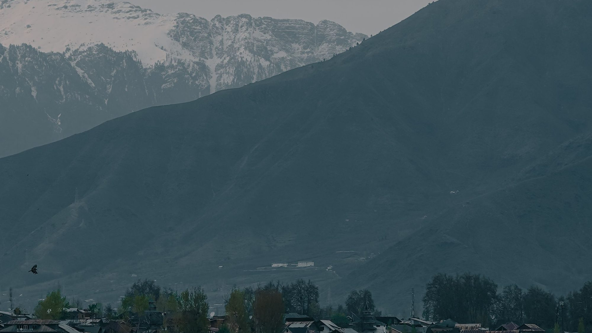
He'll tell you what the valley is doing that week, and the rest follows from there.